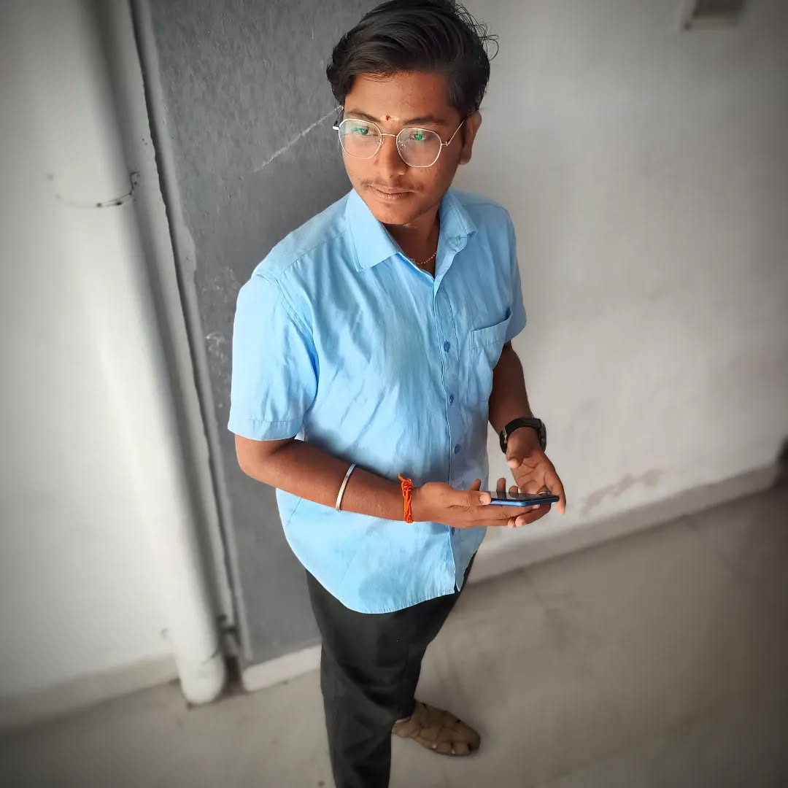

About Me
Hello! I'm Aju Krishna, a passionate full-stack developer from Kerala, India. I love crafting fast, responsive, and accessible websites and applications that offer great user experiences.
I have hands-on experience with modern web technologies including HTML, CSS, JavaScript, React, Node.js, Flask, and more. I’m also skilled in backend development, database management, and deploying full-scale apps.
Beyond coding, I enjoy UI/UX design, tinkering with open-source tools, learning AI, and building automation systems. I'm always looking for ways to improve efficiency and deliver high-quality, clean code.
Currently, I’m open to exciting freelance opportunities or full-time roles where I can grow and contribute meaningfully to innovative projects.
- 📍 Location: Kerala, India
- 🎓 Education: Bachelor's in Computer Science
- 💻 Experience:
- 🧠 Interests: AI, Web Dev, UI/UX, Automation
- 🌐 Freelance: Available
